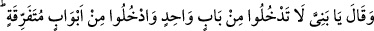
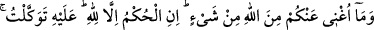
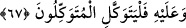

Meşâyıhtan birisi şöyle der: Sebeplere bağlanan tecerrüd ehlinin durumu, bir
hükümdarın iki kölesinin durumuna benzer. Hükümdar bunlardan birisine: “Çalış ve
alnının teriyle kazandıklarını yiyerek karnını doyur.” derken diğerine: “Sen benim
yanımdan ayrılma. Ben sana ayıracağım payla geçimini temin ederim.” der. İşte bu
kölelerden hangisi efendisinin kendisinden istediğinin dışına çıkarsa edepsizlik etmiş,
gazab ve helâk sebeplerini harekete geçirmiş olur. Bu sebepler de türlü türlüdür.
Denilir ki: Bir kimse hiçbir yiyecek ve içecek bulamayacağı bir yere düşüp de “es-
Samed” ismini zikretmeye devâm ederse bu ona kâfî gelir. Samediyyet, yeme ve
içmeden müstağnî olmak demektir.
Bir zat Allah’tan başka hiç kimseden bir şey istemeyeceğine dâir Allah’a söz vererek
tecrîd kademi üzere hac yolculuğuna çıktı. Yolun bir kısmını katettiği zaman bir müddet
beklediği halde hiçbir şey feth olunmadı. Artık yürümeye bile mecâli kalmadı. Sonra
kendi kendine:
“Bu durum, yoldan kalmaya götürecek bir zaaf sebebiyle insanı tehlikeye götüren bir
zarûret hâlidir. Allah Teâlâ ise insanın kendisini tehlikeye atmasını yasaklamıştır.” dedi.
Sonra birilerinden bir şeyler istemeye karar verdi.
Tam buna karar verdiği sırada: “Ölürüm de Allah’la yaptığım sözleşmeyi bozmam.”
diyerek bundan vazgeçti. Oraya bir kafile uğradı. O ise her şeyden el etek çekerek ve
ölümü beklemek üzere kıbleye doğru yattı.
O bu durumdayken bir atlı gelip başına dikildi. Elinde bir matara vardı. Hemen ona su
içirdi. Böylece zaruret hali ortadan kalkmış oldu. Atlı: “Kafileye ulaşmak ister misin?”
diye sorunca,
–“Kâfile bana ne kadar mesâfede?” dedi. Atlı:
–“Ayağa kalk.” dedi. Kalktım, birkaç adım attıktan sonra:
–“Sen burada dur, kervan buraya geliyor.” dedi.
Ben de durup bekledim. Bir de baktım bu atlıdan sonra o kervan bana doğru geliyor.
Bak işte bakâ, fenânın bir fer’idir. Bir kimse için varlıktan fenâ hâsıl olmadıkça feyz
ve kerem sâhibi Allah’tan bakâ bulamaz.
Varlık harmanından bir arpa tanesi kaldırmak mümkün değildir
Kim ki fenâ köyünde Hak yolunda dane ekmemişse
67. Sonra şöyle dedi: “Oğullarım! (Şehre) hepiniz bir kapıdan girmeyin, ayrı ayrı